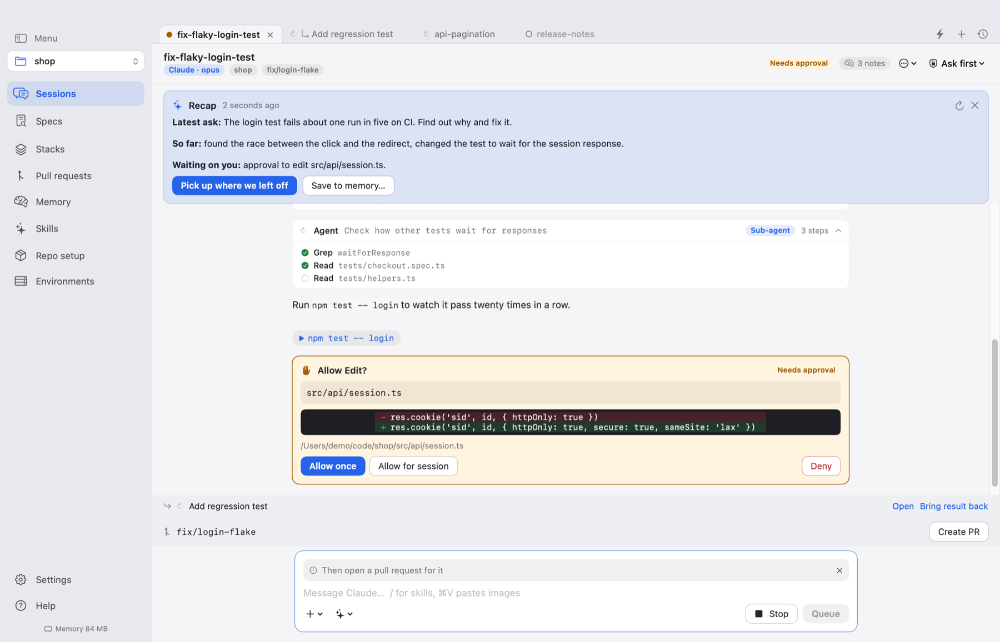
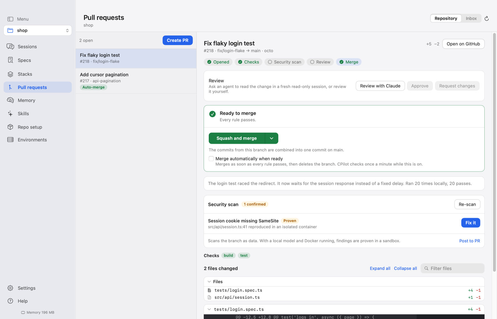
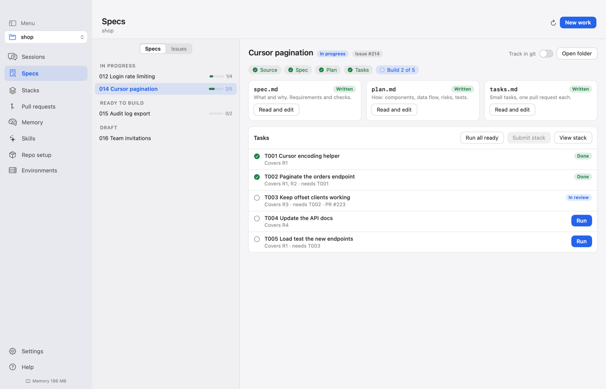
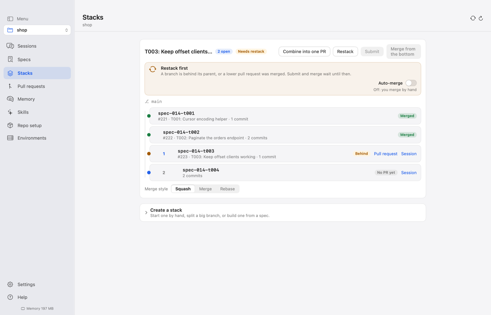
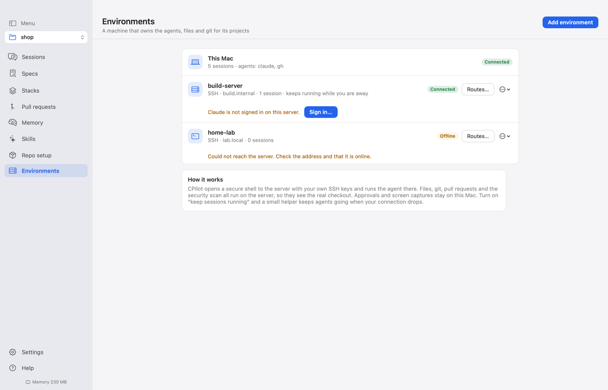
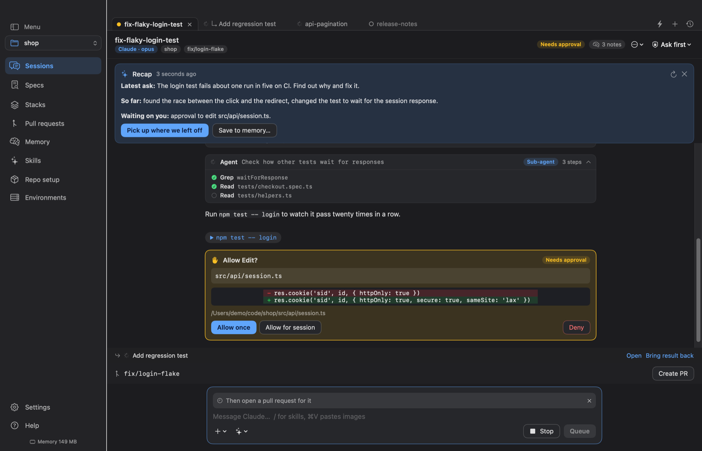

A superlight native macOS app for running AI coding sessions from your menu bar. Tabs for many sessions, one calm chat, approvals you control, and pull requests from branch to merge.

Tabs or a side list per repository. Idle sessions sleep and resume with full context. Quick session with Option-Command-N; back and forward like a browser.
Queued messages, a suggested next reply, drop-in attachments, recaps, nested sub-agent runs and edit previews as diffs.
Commands in a reply become Run chips in an integrated terminal in the session's worktree. Pages, SVGs, PDFs and images render in the app.
Claude through its command line, others from the official registry in one click: Antigravity, Cursor, goose, OpenCode, DeepSeek.
Allow once, for the session or per project. Touch ID for Full access. Short headlines, full details, everything logged.
Rows, drafts and session ids are saved as you go. Resume exactly where you were.
Diff, commits, review, security scan and a merge box like GitHub's. Auto-merge, live checks, conflict alerts and an inbox across repositories.
Small pull requests that build on each other: restacked, submitted and merged from the bottom, or combined into one when they overlap.
From an issue or a rough idea to a spec, a plan and tasks, then one session per task on stacked branches that tick themselves off.
Sessions on a machine over SSH, set up for you, signed in from the app. A helper keeps agents working when your connection drops.
Markdown notes plus on-device recall of earlier work start every session. Fork, hand off, remember in one click.
One shortcut sends a screenshot, error, page or snippet into the chat. Other tools can read sessions, specs and stacks over MCP.





curl -fsSL https://raw.githubusercontent.com/kalahroudi/cpilot/main/scripts/install.sh | bash
macOS 15 or later on Apple silicon. First launch checks what is missing and sets it up.